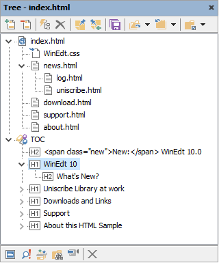

About this HTML Sample
This is a sample document included in WinEdt's distribution as a demo that illustrates how to use WinEdt's HTML configuration to edit HTML files and create web pages. For the latest news on WinEdt project visit our web page at: www.winedt.com.
How to ...
Set index.html as your main file and rebuild the tree. You will see something like:

You can use the Tree control to navigate between html files in this web site. You can also start Windows Explorer to see all the files in the sample www directory. In particular, WinEdt.css contains important definitions that affect the appearance of these web pages!
Working on an HTML-based web page does not require any compiler. HTML Preview (F8) will start your browser displaying the index that should be set as the main file. When you make changes to a file in WinEdt you have to save it and then perform Refresh (usually F5) in your browser in order to preview a modified file. The process is pretty straightforward and all editing and previewing is done off-line on your computer. The finished web system can then be uploaded to its destination on the web via FTP.
Hint: WinEdt web pages have been created in HTML configuration as described above!